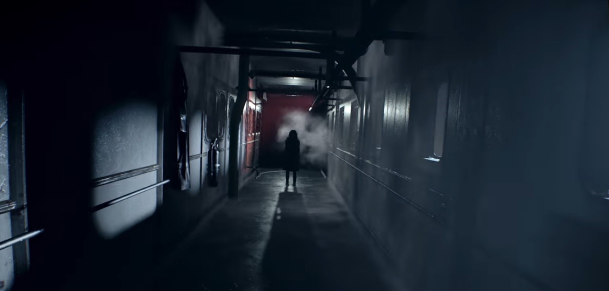

Corredores escuros
Casa mal assombrada, mistérios a serem resolvidos e muitos mais você encontra em Residente Evil Biohazard!


Venha conhecer a famosa Village
Uma vila pacata e socessagada, com a atração de um castelo de matar e sua bela anfitriã Mãe Miranda e seus filhos.